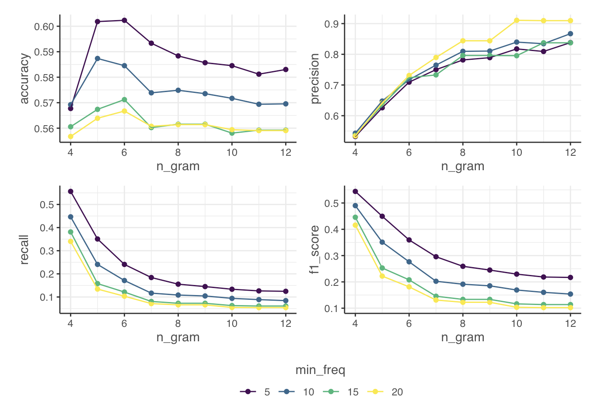

Quick Start - Code
Quick example of how to run the code for the function - get a dataset with a text variable and:
limpiar_examples %>%
limpiar_spam_grams(mention_content, n_gram = 3, min_freq = 2)
#> $spam_grams
#> # A tibble: 13 × 2
#> ngrams n
#> <chr> <int>
#> 1 amigo sancho es 2
#> 2 de vdd jajaja 2
#> 3 en una muy 2
#> 4 es un wn 2
#> 5 han metido en 2
#> 6 metido en una 2
#> 7 mi amigo sancho 2
#> 8 muy dificil situación 2
#> 9 nos han metido 2
#> 10 sancho es un 2
#> 11 un wn de 2
#> 12 una muy dificil 2
#> 13 wn de vdd 2
#>
#> $data
#> # A tibble: 6 × 6
#> doc_id author_name mention_content mention_url platform_interactions document
#> <int> <chr> <chr> <chr> <lgl> <int>
#> 1 3 edmond_dant… "@don_quijote … www.twitte… NA 3
#> 2 6 robert_jord… " Lo q no te… www.youtub… NA 6
#> 3 7 anselmo "a mi es muy g… www.twitte… NA 7
#> 4 8 maria "ayyy nooo @ro… www.twitte… NA 8
#> 5 9 pablo "todos se unen… www.instag… NA 9
#> 6 10 pilar "a mi me gusta… www.instag… NA 10
#>
#> $deleted
#> # A tibble: 4 × 6
#> doc_id author_name mention_content mention_url platform_interactions document
#> <int> <chr> <chr> <chr> <lgl> <int>
#> 1 1 don_quijote mi amigo sanch… www.twitte… NA 1
#> 2 2 sancho_panza RT mi amigo sa… www.twitte… NA 2
#> 3 4 el_sordo nos han metido… www.fakebo… NA 4
#> 4 5 commander_m… nos han metido… www.fakebo… NA 5Now read the docs!
The Problem
Extracting useful information from large, unstructured internet datasets is a difficult task even when the datasets are clean. It is an impossible task with datasets riddled by bot network content, spammers, duplicates, and near-duplicates.
Sadly our datasets do not come ready-cleaned, and we often have to remove hundreds and thousands of almost identical documents. Without automated, or semi-automated, assistance, this process is extremely time consuming and quickly becomes intractable as the size of our dataset grows.
To make a bad situation worse, there is no one-size fits all definition of ‘near duplicate’. Let’s look at two pairs of documents:
Pair 1
- Arsenal are my favourite team
- Liverpool are my favourite team
Pair 2
- @jiryan_2 wants to make you rich! Click here for amazing crypto opportunity www.definitelynotascam.com/get_rich_quick
- @jiryan_2 wants to make you wealthy! Click here for amazing crypto opportunity www.definitelynotascam.com/get_rich_quick
It should be quite clear that one of these pairs of documents is more problematic than the other, and yet both documents only differ by a single world. So even in principle, we wouldn’t want to write some code to ‘check if there is another document which only differs by one word, and remove both documents if there is’ - we need something a bit more nuanced.
A Solution - limpiar_spam_grams()
We developed an in-house solution which looks at recurrent n-grams 1 within a dataset, where grams are words - n = 1, bigrams are n = 2, trigrams are n = 3 and so on. The algorithm is not language specific, so it can be applied across any language which has clear delimiters between words.
The algorithm works as follows:
- We count the occurrence of every n-gram across all documents in our
dataset. Where the value of n is set by the user in the
n_gramparameter. - We filter the n-grams for those that occur above a
min_freq. - We filter our documents that have any n-gram from this list, we retain documents that do not have any n-gram.
- We return a list of: the ‘spam_grams’ - the n-grams which occur
above the
min_freq, the remaining data, and the deleted data, for the user to inspect.
Why does it work?
limpiar_spam_grams() is an heuristic approach to
cleaning, it is simple but effective. The key insight for understanding
why it works is to think about perplexity in the Information Theory/language
modelling sense. Sequences of natural language are high in perplexity -
for most ideas that we want to communicate, there are many words we
could choose from to communicate the idea. This means that two people
describing the same idea are unlikely to use the same words. So when
ideas are communicated with the exact same words, it is likely that they
have come from the same source, i.e. the process that generated them was
not independent. This is how we can recognise unsophisticated spammers
and bot networks.
Sentence 1: The unexpected shower forced all the beachgoers to quickly gather their belongings and seek shelter in nearby buildings.
Sentence 2: The sudden downpour prompted the seaside visitors to hastily collect their items and dash into adjacent structures.
The idea communicated is the same, but the words are different.
Example code
Let’s run through some code to see how the function is applied. We’ll
save the output of limpiar_spam_grams() to a variable -
this variable will contain our list of $spam_grams, $data, $deleted.
We’ll use the limpiar_examples dataset, which is a small,
toy dataset of only 10 rows (documents). We can read every document in
this dataset, and quickly verify the outputs; so it is handy for
learning, but in reality we will be working with much larger datasets so
verification will take up more of our time.
We run the code with low values for n_gram and
min_freq because our dataset is small, and it does not
contain many near duplicates. We ask the function to find any substring
within a document of 3 words that is seen in the entire dataset that is
seen in at least 2 documents.
spam_grams_output <- limpiar_examples %>%
limpiar_spam_grams(mention_content, n_gram = 3, min_freq = 2)We can check what’s in the list simply with names().
names(spam_grams_output)
#> [1] "spam_grams" "data" "deleted"We confirm that we have the three elements of the list that we
expect. Now we can take a look at spam_grams to see what
ngrams the function is suggesting we delete:
spam_grams_output$spam_grams
#> # A tibble: 13 × 2
#> ngrams n
#> <chr> <int>
#> 1 amigo sancho es 2
#> 2 de vdd jajaja 2
#> 3 en una muy 2
#> 4 es un wn 2
#> 5 han metido en 2
#> 6 metido en una 2
#> 7 mi amigo sancho 2
#> 8 muy dificil situación 2
#> 9 nos han metido 2
#> 10 sancho es un 2
#> 11 un wn de 2
#> 12 una muy dificil 2
#> 13 wn de vdd 2If we look at the ngrams that have been picked out to do
the filtering, it’s clear that they ar e not the most robust. We could
imagine many documents that we do not in fact want to remove from a
datset, containing at least one of these ngrams. It’s vital that the
user inspects these ngrams and considers whether documents containing
them are likely to be spam-like.
If we move to inspecting the actual documents that were deleted, we see that the ngrams in $spam_grams were coming from two pairs of documents - one is a tweet + a retweet - by authors Don Quijote & Sancho Panza. The way retweets are formulated, it makes sense for them to be treated as near duplicates. We also have a pair of exact duplicates by EL Sordo and Commander Miranda - we would expect duplicates to be flagged as near duplicates. So in this case the function is working as intended.
spam_grams_output$deleted
#> # A tibble: 4 × 6
#> doc_id author_name mention_content mention_url platform_interactions document
#> <int> <chr> <chr> <chr> <lgl> <int>
#> 1 1 don_quijote mi amigo sanch… www.twitte… NA 1
#> 2 2 sancho_panza RT mi amigo sa… www.twitte… NA 2
#> 3 4 el_sordo nos han metido… www.fakebo… NA 4
#> 4 5 commander_m… nos han metido… www.fakebo… NA 5However, given what we noticed in the $spam_grams output, we would not want to use these exact parameters on a larger dataset, because we have too many ngrams which could be used in non-spam-like documents.
This raises a question, what should we set as starting parameters for
working with limpiar_spam_grams() on larger datasets?
Parameter Settings
From experience and early research, we suggest setting
ngram = 7 as a starting point, and min_freq
should be scaled with the number of documents in the dataset. Good
starting points would be to take the log of the size of the dataset, or
the square root.
Why the log or the square root?
Ultimately this decision is empirical - and you should be generating
data as you use the function, i.e. if you set
min_freq = 10, you’ll need to grab the $deleted data tibble
from the function’s output, and sample documents, counting and recording
how many you think are truly spam-like and should be removed. Keep doing
this until you find the parameter for which ~90% of documents are
spam-like. Record the outputs of your experiments.
Trade-off
Setting the parameters results in a trade-off between precision
& recall - if you set ngram = 1, and
min_freq =1, you will remove every single document in your
dataset that has 1 word in it. This will result in 100% recall of spam
documents - because you remove every document. However, precision would
be low.
limpiar_examples %>%
limpiar_spam_grams(mention_content, 1, 1)
#> $spam_grams
#> # A tibble: 56 × 2
#> ngrams n
#> <chr> <int>
#> 1 es 6
#> 2 mi 4
#> 3 muy 4
#> 4 un 4
#> 5 a 3
#> 6 amigo 3
#> 7 sancho 3
#> 8 de 2
#> 9 dificil 2
#> 10 en 2
#> # ℹ 46 more rows
#>
#> $data
#> # A tibble: 0 × 6
#> # ℹ 6 variables: doc_id <int>, author_name <chr>, mention_content <chr>,
#> # mention_url <chr>, platform_interactions <lgl>, document <int>
#>
#> $deleted
#> # A tibble: 10 × 6
#> doc_id author_name mention_content mention_url platform_interactions document
#> <int> <chr> <chr> <chr> <lgl> <int>
#> 1 1 don_quijote "mi amigo sanc… www.twitte… NA 1
#> 2 2 sancho_pan… "RT mi amigo s… www.twitte… NA 2
#> 3 3 edmond_dan… "@don_quijote … www.twitte… NA 3
#> 4 4 el_sordo "nos han metid… www.fakebo… NA 4
#> 5 5 commander_… "nos han metid… www.fakebo… NA 5
#> 6 6 robert_jor… " Lo q no te… www.youtub… NA 6
#> 7 7 anselmo "a mi es muy g… www.twitte… NA 7
#> 8 8 maria "ayyy nooo @ro… www.twitte… NA 8
#> 9 9 pablo "todos se unen… www.instag… NA 9
#> 10 10 pilar "a mi me gusta… www.instag… NA 10We have some results from early research which shows this precision / recall trade-off 
Limitations
Sometimes long substrings do not in fact indicate documents that we
should want to remove, for example, some long substrings will naturally
occur in many documents - for example when researching web browsers “I
set Chrome to my default browser” is an ngram =7 which may
occur many times without indicating spam-like documents.
Likewise with quotes, you have probably seen this quote before many times:
‘Life is like riding a bicycle. To keep your balance, you must keep moving.’
It’s often used in blogs, articles, explainers etc. as a hook or as
supporting evidence. It is much longer than we would usually set the
value of our ngram = parameter, meaning if it is seen
across our documents more than min_freq times, then all of
those documents would be deleted. Although in this case it’s actually
quite unlikely to be a problem, the general principle is a limitation of
the approach.
Another limitation is that the function scales somewhat poorly with
the size of documents - if we have many long documents in a large corpus
of text, we will need a lot of time and memory to use
limpiar_spam_grams as it currently works. As we often need
to iterate over the parameters, this can be a barrier to usage.